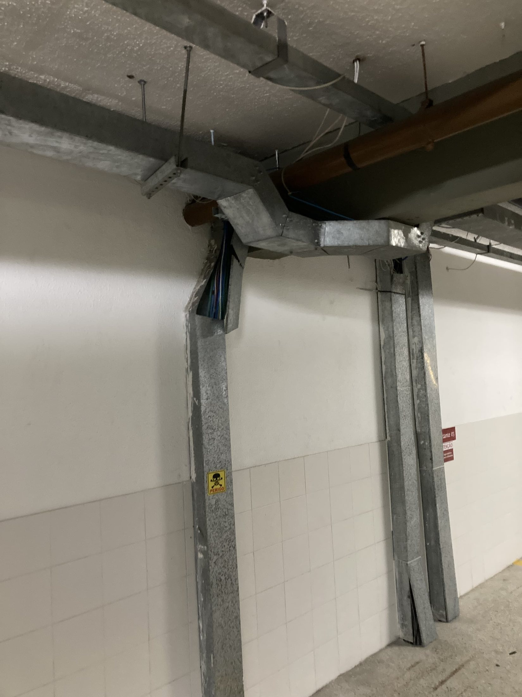
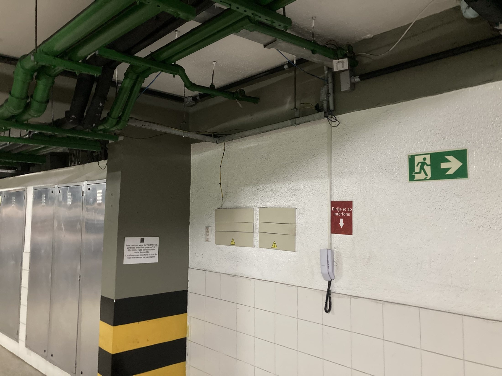
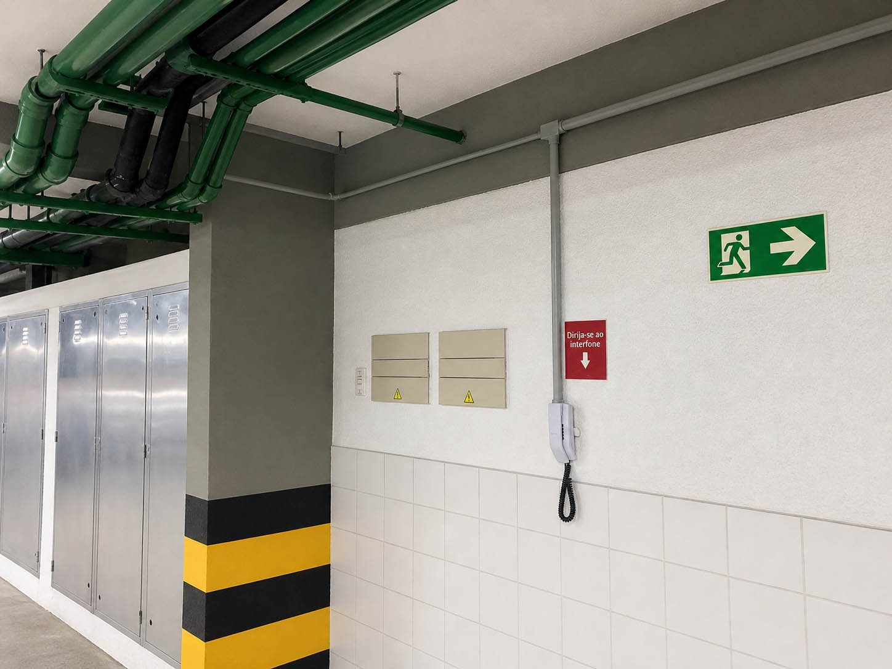
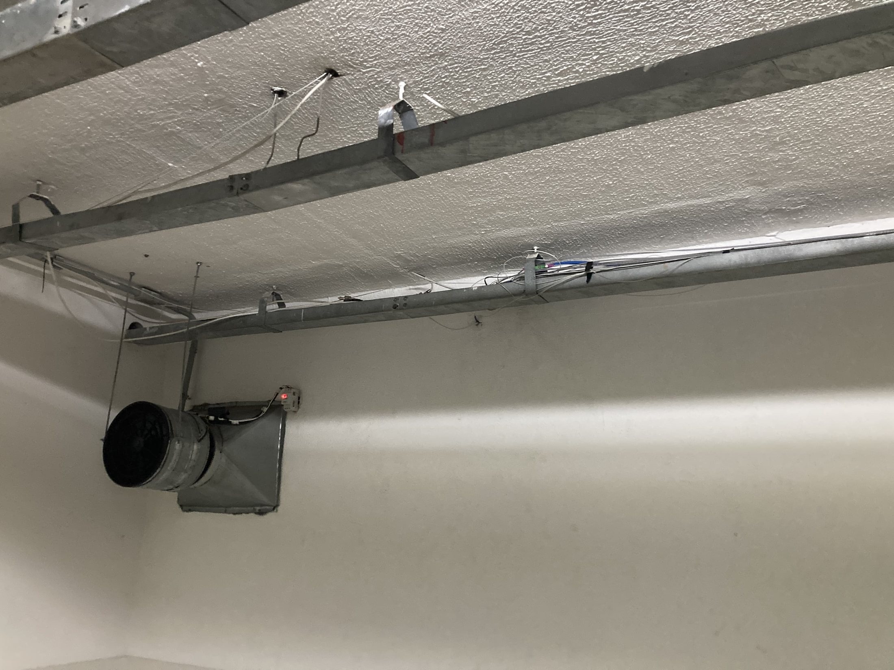
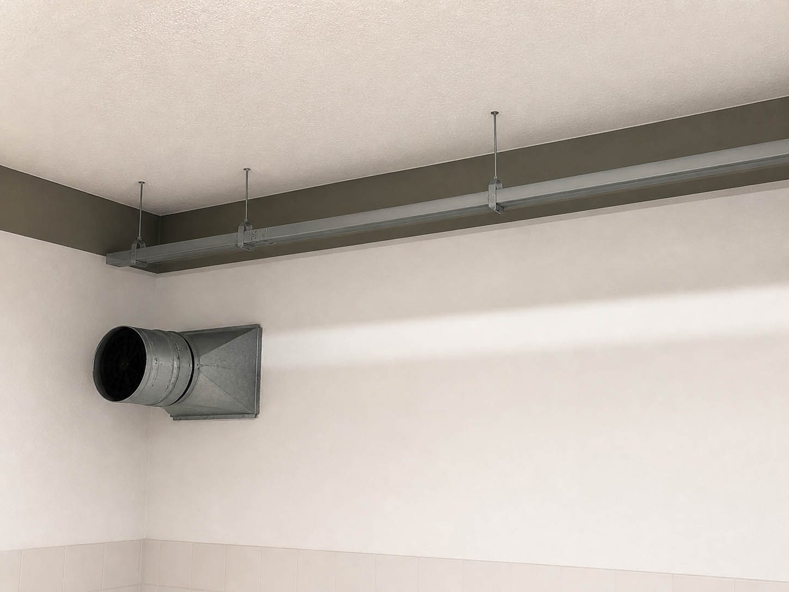
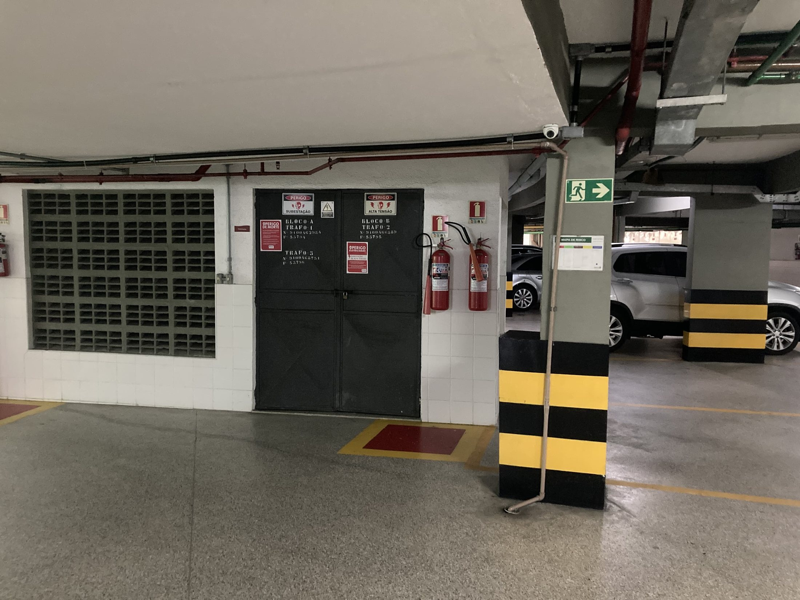
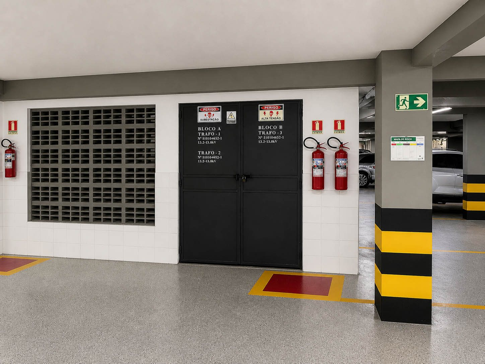
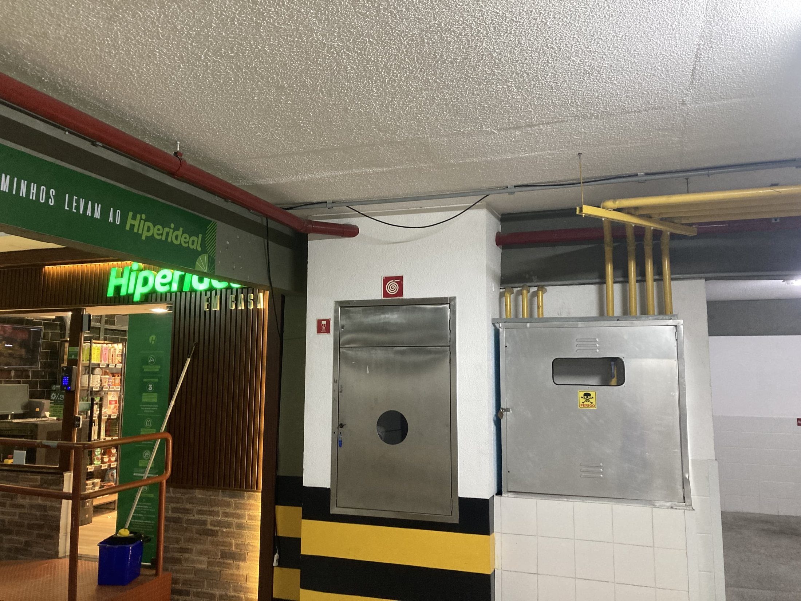
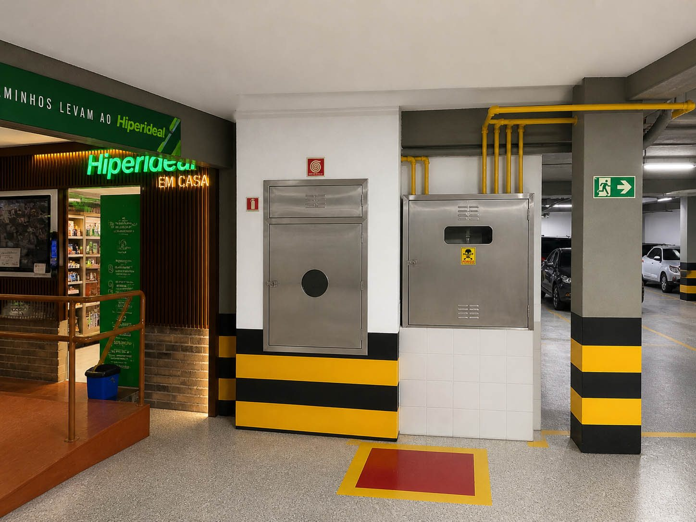

Garagem
Estudo de organização visual, segurança, circulação e preparação para futuras decisões sobre infraestrutura e eletrificação.

Garagem — situação atual / setor A.
Clique aqui para ver a imagem maior

Garagem — proposta visual / setor A.
Clique aqui para ver a imagem maior

Garagem — situação atual / setor B.
Clique aqui para ver a imagem maior

Garagem — proposta visual / setor B.
Clique aqui para ver a imagem maior

Garagem — situação atual / setor C.
Clique aqui para ver a imagem maior

Garagem — proposta visual / setor C.
Clique aqui para ver a imagem maior

Garagem — situação atual / setor D.
Clique aqui para ver a imagem maior

Garagem — proposta visual / setor D.
Clique aqui para ver a imagem maior

Garagem — situação atual / setor E.
Clique aqui para ver a imagem maior

Garagem — proposta visual / setor E.
Clique aqui para ver a imagem maior
Garagem: organização visual sem apagar a infraestrutura
A garagem é uma área técnica, funcional e de circulação diária. Por isso, a proposta não deve tentar “maquiar” o espaço como se ele fosse um lobby ou uma área social. O objetivo é melhorar a leitura visual, a segurança e a organização, respeitando a natureza operacional do ambiente.
É importante registrar que algumas imagens geradas por inteligência artificial acabaram escondendo tubos e elementos técnicos que, na prática, podem precisar permanecer aparentes. Isso não deve ser interpretado como diretriz de obra. Certas tubulações precisam continuar visíveis, acessíveis e identificadas, inclusive mantendo suas cores técnicas originais quando isso for necessário por norma, manutenção ou segurança.
O problema principal não são os tubos. Pelo contrário: quando bem organizados, alinhados, limpos e corretamente pintados ou identificados, eles podem até trazer uma estética técnica interessante, quase industrial, compatível com uma garagem bem cuidada.
O que realmente prejudica o ambiente é a sensação de improviso: cabos passando na frente de paredes sem critério, fios pendurados, eletrocalhas mal resolvidas, instalações aparentes sem alinhamento, remendos visuais, excesso de elementos soltos e falta de uma lógica clara de acabamento.
A proposta, portanto, não é esconder tudo. A proposta é organizar. Tubos necessários podem ficar aparentes; cabos e eletrocalhas devem ser racionalizados, alinhados, fixados corretamente e, quando possível, integrados à linguagem visual do espaço.
Diretriz de intervenção
A garagem pode ganhar muito com medidas relativamente objetivas: pintura mais coerente, revisão de eletrocalhas, ocultação ou reorganização de cabos soltos, padronização de sinalização, melhoria pontual de iluminação e tratamento das áreas que hoje parecem abandonadas ou improvisadas.
O ideal é que qualquer intervenção seja precedida por avaliação técnica. Não se deve remover, esconder ou pintar elementos de infraestrutura sem entender sua função. Tubulações hidráulicas, elétricas, de incêndio, gás, drenagem ou telecomunicações podem ter regras próprias de acesso, cor, identificação e manutenção.
Assim, as fotomontagens devem ser lidas como estudos de atmosfera e organização visual, não como projeto executivo. Elas ajudam a enxergar o potencial da garagem, mas a solução real precisa respeitar normas, manutenção, AVCB, segurança e operação diária.
Resultado esperado
Uma garagem melhor não precisa parecer luxuosa. Ela precisa parecer cuidada, segura, limpa, clara e tecnicamente organizada. Quando a infraestrutura aparente está bem tratada, ela comunica manutenção e controle. Quando há fios soltos, eletrocalhas confusas e acabamentos improvisados, a mensagem é de descuido.
O ganho desejado é esse: transformar a garagem em uma área funcionalmente honesta, visualmente mais limpa e compatível com o padrão de valorização patrimonial que o Costa España pretende construir.